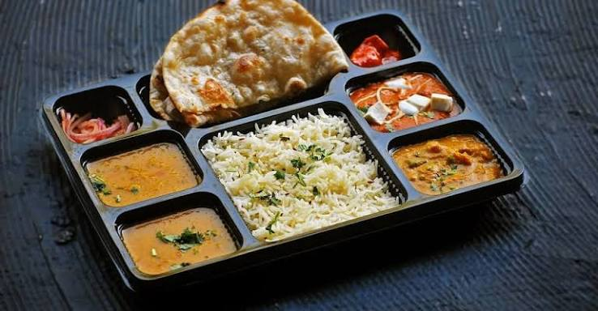

Dine-in and Walk-ins: Curated lists of restaurants open for lunch, featuring filters for outdoor seating, pet-friendly venues, and exclusive walk-in discounts
Meal Varieties: Ranging from simple executive meal boxes and thalis to extensive continental, North Indian, and Asian spreads.